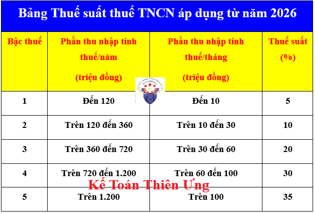
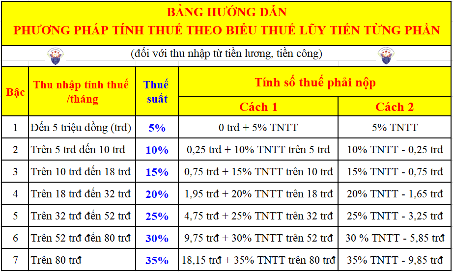

Thuế suất thuế TNCN từ tiền lương tiền công có 2 loại:
+ Loại 1: Thuế suất theo biểu lũy tiền từng phần
Áp dụng khi tính thuế TNCN cho người lao động là cá nhân cư trú và có ký hợp đồng lao động có thời hạn từ 3 tháng trở lên
+ Loại 2: Thuế suất toàn phần 10% hoặc 20%
+/ Thuế suất 10%: Áp dụng khi tính thuế TNCN cho người lao động là cá nhân cư trú ký hợp đồng lao động có thời hạn dưới 3 tháng hoặc không ký hợp đồng lao động
+/ Thuế suất 20%: Áp dụng khi tính thuế TNCN cho người lao động là cá nhân không cư trú
+/ Thuế suất 20%: Áp dụng khi tính thuế TNCN cho người lao động là cá nhân không cư trú
Chi tiết về các mức thuế suất thuế TNCN theo biểu lũy tiến từng phần:
Thực hiện theo Thông tư 111/2013/TT-BTC như sau:
Bảng thuế suất lũy tiến từng phần theo tháng này được ban hành tại Phụ lục: 01/PL-TNCN của Thông tư số 111/2013/TT-BTC
Ví dụ: Tháng 1/2025, anh Lê Đình Hưng có thu nhập tính thuế là 8 triệu thì tính lũy tiến như sau:
Cách 1: Nhân từng bậc thu nhập với thuế suất:
Cách 2: Dùng công thức theo cách 1 hoặc cách 2 trong bảng thuế suất lũy tiến:
Chi tiết về các công thức, cách tính thuế TNCN theo biểu lũy tiến thì các bạn có thể tham khảo tại đây:
1. Bảng thuế suất lũy tiến áp dụng cho giai đoạn từ ngày 01/01/2026 trở đi:
Thực hiện theo quy định tại Luật Thuế TNCN số 109/2025/QH15 có hiệu lực thi hành từ ngày 01/07/2026, riêng các quy định liên quan đến thu nhập từ kinh doanh, từ tiền lương, tiền công của cá nhân cư trú áp dụng từ kỳ tính thuế năm 2026.
Theo khoản 2, điều 9 của Luật Thuế TNCN số 109/2025/QH15 thì Biểu thuế luỹ tiến từng phần được quy định như sau:
Theo khoản 2, điều 9 của Luật Thuế TNCN số 109/2025/QH15 thì Biểu thuế luỹ tiến từng phần được quy định như sau:

Biểu thuế luỹ tiến từng phần áp dụng đối với thu nhập tính thuế quy định tại khoản 2 Điều 8 của Luật Thuế TNCN số 109/2025/QH15.
Điều 8. Thuế thu nhập cá nhân đối với thu nhập từ tiền lương, tiền công
2. Thu nhập tính thuế đối với thu nhập từ tiền lương, tiền công là tổng thu nhập chịu thuế quy định tại khoản 2 Điều 3 của Luật này mà người nộp thuế nhận được trong kỳ tính thuế, trừ (-) đi các khoản đóng góp bảo hiểm xã hội, bảo hiểm y tế, bảo hiểm thất nghiệp, bảo hiểm trách nhiệm nghề nghiệp đối với một số ngành, nghề phải tham gia bảo hiểm bắt buộc, khoản đóng góp tham gia bảo hiểm hưu trí bổ sung theo quy định của Luật Bảo hiểm xã hội, mua bảo hiểm hưu trí tự nguyện, bảo hiểm nhân thọ không vượt quá mức do Chính phủ quy định và các khoản giảm trừ quy định tại Điều 10 và Điều 11 của Luật này.
Chi tiết về Luật Thuế TNCN số 109/2025/QH15 thì các bạn xem tại đây: Luật Thuế TNCN số 109/2025/QH15
2. Bảng thuế suất lũy tiến áp dụng cho giai đoạn trước ngày 01/01/2026:
Thực hiện theo Thông tư 111/2013/TT-BTC như sau:
2. 1. Biểu thuế lũy tiến từng phần theo tháng (áp dụng trước ngày 01/01/2026):

Bảng thuế suất lũy tiến từng phần theo tháng này được ban hành tại Phụ lục: 01/PL-TNCN của Thông tư số 111/2013/TT-BTC
Lũy tiến là tăng dần, từng phần (từng bậc) thu nhập tính thuế sẽ có những mức thuế suất tương ứng với mức thu nhập đó, thu nhập càng cao thì mức thuế suất càng lớn.
Cách áp dụng Bảng thuế suất thuế TNCN theo biểu lũy tiến từng phần để tính thuế TNCN hàng tháng cho NLĐ như sau:
Thuế TNCN phải nộp = Thu nhập tính thuế X Thuế suất theo biểu lũy tiến từng phần
Ví dụ: Tháng 1/2025, anh Lê Đình Hưng có thu nhập tính thuế là 8 triệu thì tính lũy tiến như sau:
Cách 1: Nhân từng bậc thu nhập với thuế suất:
+ Bậc 1: từ 0 đến 5 triệu thuế suất là 5% = 5.000.000 x 5% = 250.000đ
+ Bậc 2: từ trên 5 triệu đến 10 triệu thuế suất là 10% = (8.000.000 là tổng thu nhập tính thuế - 5.000.000 là số thuế đã tính ở bậc 1 rồi) x 10% = 3.000.000 x 10% = 300.000đ
=> Tổng Thuế TNCN phải nộp là: 250.000 + 300.000 = 550.000đ
+ Bậc 2: từ trên 5 triệu đến 10 triệu thuế suất là 10% = (8.000.000 là tổng thu nhập tính thuế - 5.000.000 là số thuế đã tính ở bậc 1 rồi) x 10% = 3.000.000 x 10% = 300.000đ
=> Tổng Thuế TNCN phải nộp là: 250.000 + 300.000 = 550.000đ
Cách 2: Dùng công thức theo cách 1 hoặc cách 2 trong bảng thuế suất lũy tiến:
Với mức thu nhập tính thuế /tháng là 8 triệu => Thuộc vào bậc 2 trong thuế suất lũy tiến
=> Công thức theo cách 2 của bậc 2 là: 10% TNTT - 0,25 trđ
=> Tổng số tiền Thuế TNCN phải nộp là: = 10% x 8.000.000 - 250.000 = 550.000đ
=> Công thức theo cách 2 của bậc 2 là: 10% TNTT - 0,25 trđ
=> Tổng số tiền Thuế TNCN phải nộp là: = 10% x 8.000.000 - 250.000 = 550.000đ
Chi tiết về các công thức, cách tính thuế TNCN theo biểu lũy tiến thì các bạn có thể tham khảo tại đây:
2.2. Biểu thuế lũy tiến từng phần theo năm (áp dụng trước ngày 01/01/2026)
| Bậc thuế | Phần thu nhập tính thuế/năm (triệu đồng) | Phần thu nhập tính thuế/tháng (triệu đồng) | Thuế suất (%) |
| 1 | Đến 60 | Đến 5 | 5 |
| 2 | Trên 60 đến 120 | Trên 5 đến 10 | 10 |
| 3 | Trên 120 đến 216 | Trên 10 đến 18 | 15 |
| 4 | Trên 216 đến 384 | Trên 18 đến 32 | 20 |
| 5 | Trên 384 đến 624 | Trên 32 đến 52 | 25 |
| 6 | Trên 624 đến 960 | Trên 52 đến 80 | 30 |
| 7 | Trên 960 | Trên 80 | 35 |
Bảng thuế suất lũy tiến từng phần theo năm này được ban hành tại khoản 2, điều 7 của Thông tư số 111/2013/TT-BTC hoặc điều 14 của Nghị định số 65/2013/NĐ-CP quy định chi tiết và hướng dẫn thi hành một số điều của Luật thuế thu nhập cá nhân và Luật sửa đổi, bổ sung một số điều của Luật thuế thu nhập cá nhân.
Biểu thuế lũy tiến từng phần theo năm áp dụng khi tính quyết toán thuế TNCN cho 12 tháng trong năm dương lịch
Công ty đào tạo Kế Toán Diệu Tâm mời các bạn tham khảo thêm bài viết: